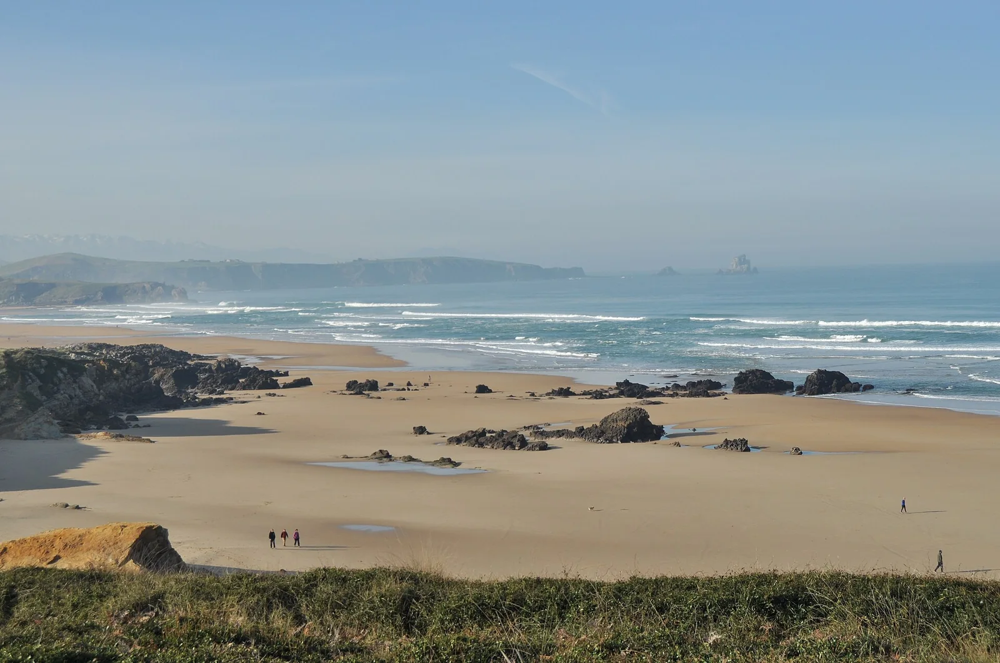

Playa de Canallave
Liencres, Espagne · surf

Un spot dans le parc naturel des dunes de Liencres. La plage donne sur la côte cantabrique.
- Lieu
- Liencres, Espagne
- Niveau
- Variable selon les conditions
- Activités
- surf
- Type d'eau
- Mer / océan
- Coordonnées
- 43.45, -3.96 (position approximative du secteur)
Ouvrir dans Ocean Buddy Télécharger sur l'App Store
Source : Office du tourisme espagnol.